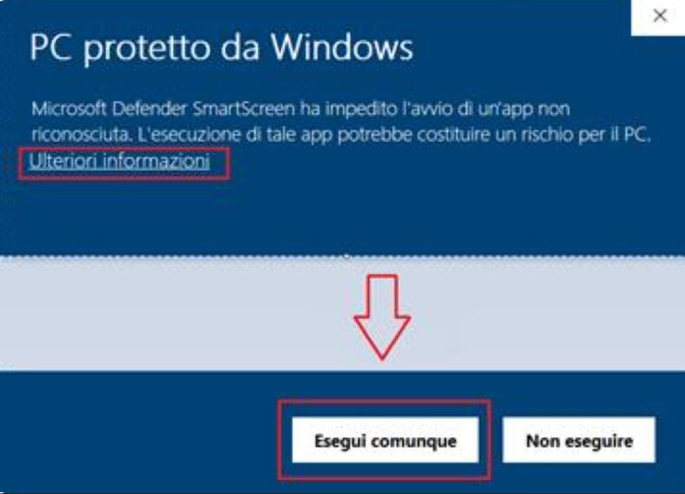

Stralanc
Privacy policy
Download our apps:
Se hai problemi con l'installazione da Play Store puoi provare l'APK. |
If you have problems installing via the Play Store you can try the APK. |

Nota: durante l'installazione su Windows, se viene visualizzato un messaggio di Microsoft Defender, fai clic su "Ulteriori informazioni", quindi su "Esegui comunque". |
Note: During installation on Windows, if you see a Microsoft Defender message, click "More information," then "Run anyway". |